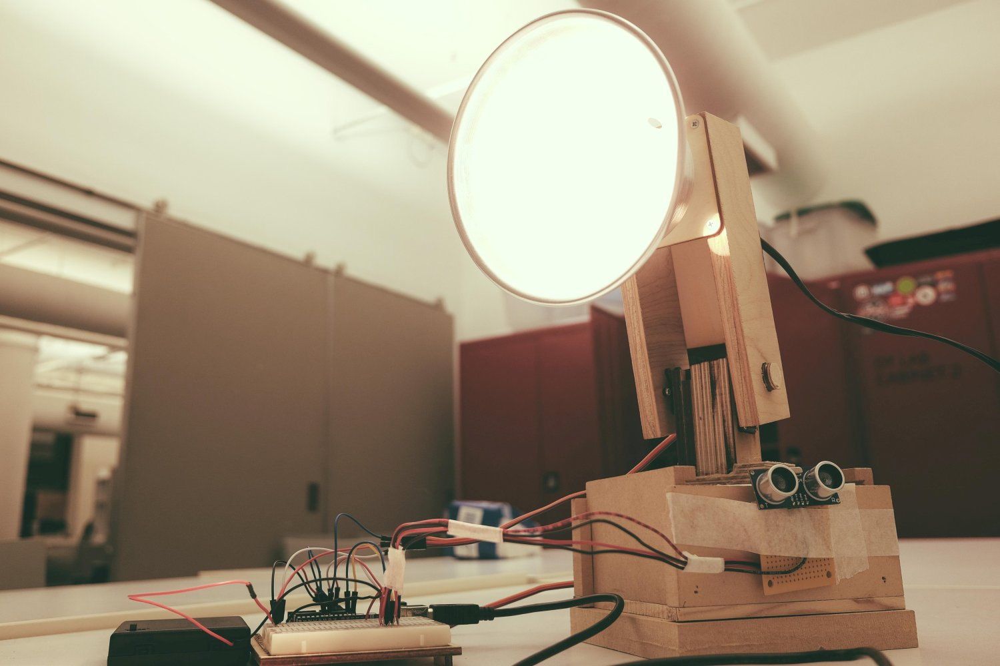

We stare at our machines all the time, computers, cell phones, and TVs. How do they feel? What if they stared back at us? I built a lamp that dims itself, follows human faces when far away, curiously gazing at us strange creatures. When we get close, she turns away shyly, hiding her face. She even dims her bulb when you try to interact with her. The first breed of its kind, it stands at a crossroads of evolution, after machines comes the empathetic, emotional, personafied breed. See how I built her here.


Cell phones are our babies. We put them in covers, laminate them, protect them with finger print and face ID and put them in cute animal containers. When we lose them we freak out as if we lost our pet. Similarly, we sense that the lamp is alive because we project our emotions onto them. What's unique about humans is the ability to see humanity in all things.


The lamp embodied physical interaction; what about verbal interaction? How do we evoke emotionality in communicative machines? I wanted to see how humans respond to chatbots that delay their replies or make mistakes. Would we see them as flaky, moody, or unreliable? I adopted the Eliza bot that talks about your problems, and added delays that 1. are proportional to how long users take to type, 2. are random so that users have to wait, 3. are rare but unusually long, making them anxious, and 4. are delays on all questions posed as if the bot is working on answers. Random waiting times can be showed by a physical clock or counter on an LED. Humans ended up staring at the clock and wonder when the bot will reply. Surprisingly the majority of subjects found the chatbot more cute than moody.



As parents, it's simple to take care of one baby, but your second and third ones generate exponentially more variety and difficulties as they stare back at strange faces. What would a set of different machines think about us staring at them? What if a group of machines stared back at us? What does a network of collaborating, conflicting machines evoke in us? Will we see their individual personalities, their agency, and their perceived “secret lives?” I used a digital flock of pan-and-tilt machines coupled to cameras that track human faces and exhibit unique behaviors when faces are found (or not found). Today, machines are making us think, helping us get things done, and inducing us to fall in love, with humans, or, in the future, with machines.
There're two groups of machines. One uses raspberry pi and its camera to keep track of face locations so that their associated flock can look at humans when they are facing the camera and do leisure tasks when they are not. The other group follows a leader which has a mounted webcam connected to an Arduino that is controlled by openCV via openFrameworks. The former flock keeps a model of the world and faces within it, while the latter only moves closer to faces when they are found. Such a model-based system vs. an online system can be found to exhibit different behaviors. In user tests, humans have fun with the model-based system, but think that the online system is finicky and flaky, because it doesn’t see faces unless they are close by. Agency is taken either by humans or by machines. We can tell stories by using machines with different interaction styles, which upon examination appear to us as different personality types. The machine amongst the machines is akin to the human within the humans.


⇦
⇨